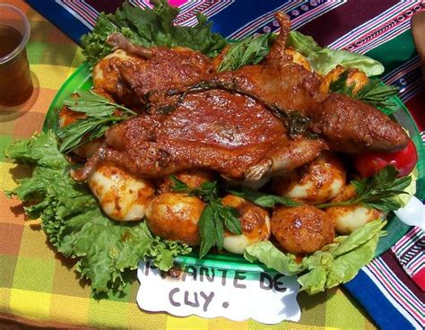

1. El Tradicional Picante de Cuy
Considerado el plato estrella de las celebraciones patronales y reuniones familiares en Nepeña. Este potaje se prepara con un aderezo generoso de ají panca, maní tostado y molido de la zona, acompañado de papas sancochadas y hierbas aromáticas que realzan su sabor único.
